kitsune enginev3
A modular browser game engine on Three.js r128 that still builds every game into one offline HTML file. Version 3 adds an HDR render pipeline with temporal upscaling, a physical sky with volumetric clouds, cascaded soft shadows, probe-based global illumination, water and weather, procedural forests and fur, cluster LOD, open-world terrain, Rapier physics, GPU particles, procedural animation, navmesh AI, spatial audio, a gameplay framework and an in-game editor. Spirit Isle, the included game, uses all of it.
Open Spirit Isle →Open the Open World →Spirit Isle
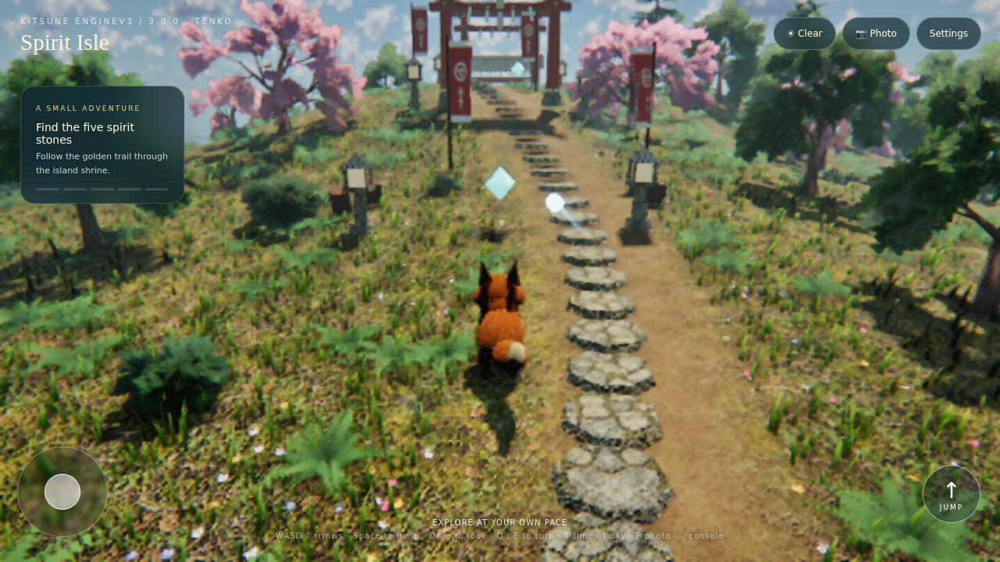
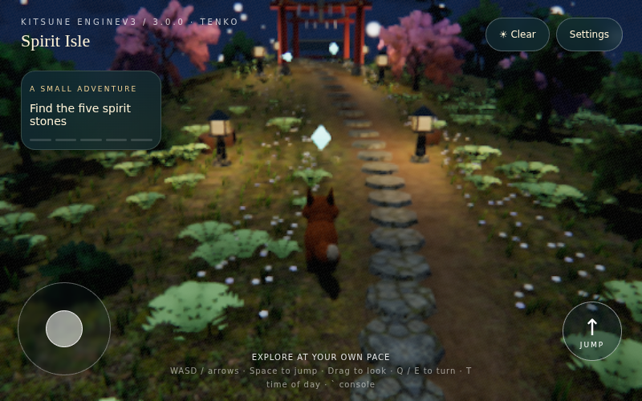
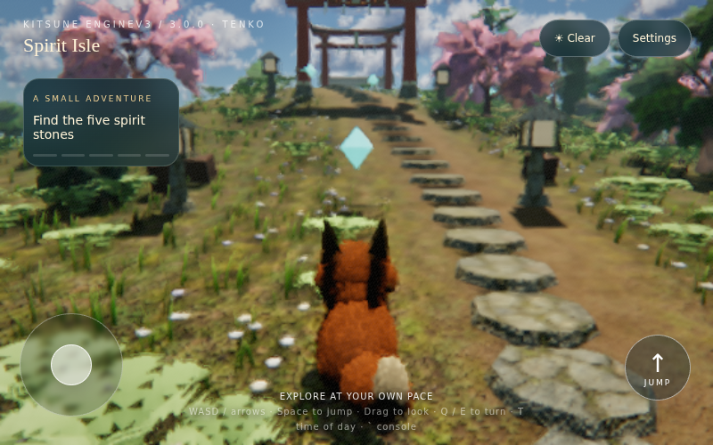
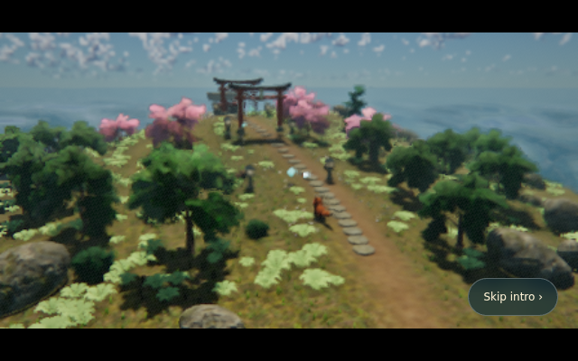
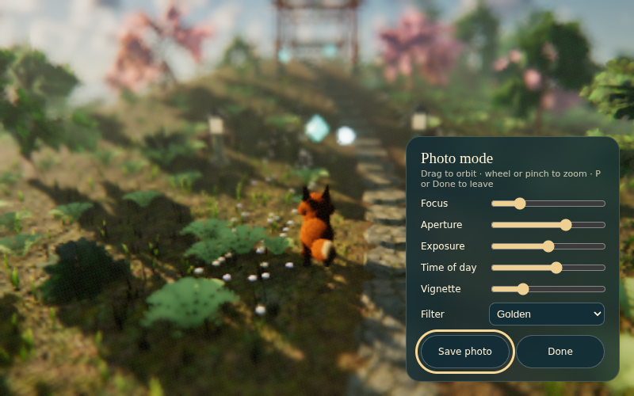
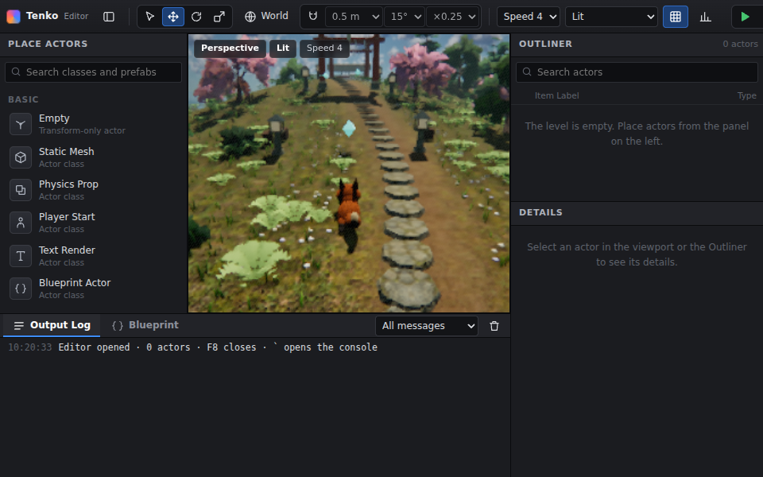
- Open spirit-isle.html in a desktop or mobile browser with WebGL2. It runs from the file itself; no server, account or network request.
- Press Enter Spirit Isle. Keyboard: WASD or arrows, Space to jump, drag to look, Q/E to turn, T to advance the hour. Phone: left joystick, drag to look, pinch to zoom, Jump button.
- A glowing wisp leads you to the nearest of five spirit stones. Rain is in the top corner; Settings holds quality presets, Save, Load and New run.
- Entering plays a short flyover (Space or Skip to jump straight in). Press P or the camera button for photo mode: the interface hides and you can orbit the fox, set focus, aperture, exposure, time of day and a colour filter, and save a PNG.
- Press F8 for the level editor and ` (backquote) for the console, for example
r.ViewMode ao,stat unitorr.LocalExposure 0.
Headless and low-power machines start on the Low preset, which turns the HDR pipeline, shadows and GI off; pick High or Ultra in Settings to see the full renderer.
Open World
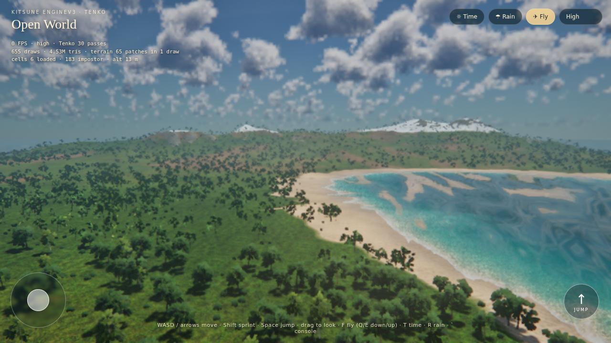
Open open-world.html the same way. Walk with the fox (Shift to sprint), press F to fly (Q/E down and up), T for the time of day and R for rain. Loading generates the whole island on your device, which takes several seconds.
What is in the engine
| Area | Systems |
|---|---|
| Rendering | HDR pipeline: TAA with temporal upscaling and dynamic resolution, GTAO, SSGI, screen-space reflections (translucent materials, and puddles from the previous frame), height and volumetric fog, light shafts, bloom and lens flare, eye adaptation and local exposure, ACES grading, depth of field, motion blur, debug view modes. |
| Lighting | Physical sky (Rayleigh, Mie, ozone) with volumetric clouds and a captured sky light; stable cascaded shadows with contact-hardening PCSS; a pooled point-light system; probe-volume GI with multi-bounce and DDGI-style visibility. |
| Surfaces | Material graphs compiled from JSON nodes and a 14-material library; Gerstner water with reflection, refraction, caustics and foam; rain wetness, puddles with ripples, and snow. |
| World | Procedural trees (six species), foliage spawner, interactive grass, shell fur; heightfield generation with hydraulic and thermal erosion, CDLOD GPU terrain, World Partition streaming. |
| Geometry | Mesh simplification, LOD meshes, instanced LOD with octahedral impostors, and a Nanite-inspired cluster DAG with crack-free cuts. |
| Simulation | Rapier rigid bodies, joints, character controller, vehicle, fracture and buoyancy; position-based cloth for flags and banners; GPU particles with 14 presets. |
| Characters and AI | Tweens, IK (two-bone, FABRIK, CCD), spring chains, procedural gait, blend spaces, state machine, sequencer and camera rails; navmesh, crowds, behavior trees, perception and environment queries. |
| Audio | HRTF spatial audio, mix buses with ducking, reverb zones, synthesized footsteps and effects, ambience beds and generative music. |
| Tools | Actors, components, JSON levels and Blueprint event graphs; the F8 editor with gizmos, undo/redo, Play In Editor and glTF import/export; the backquote console with stat unit and per-pass stat gpu timings. |
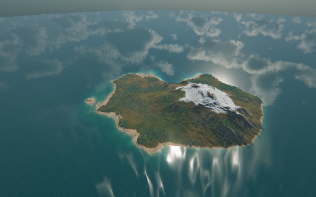
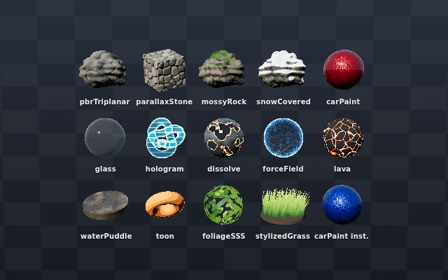
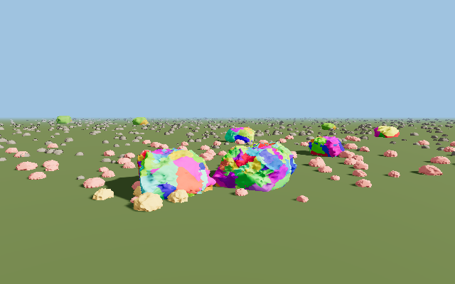
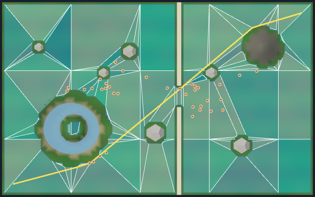
Use the source
The source folder holds the engine modules (src/), the built bundle (assets/), the editable Spirit Isle starter, tests, and a reference for every system. kitsune-enginev3.skill packages the same folder for skill-aware tools.
python3 source/scripts/build.py source/assets/starter.html my-game.html # build a game
python3 source/scripts/build_engine.py # rebuild the engine after editing src/
node source/scripts/test_all.cjs # every test suite; writes verification.jsonStart with engine-overview.md (module map, frame order, presets, mobile budgets), then rendering-v3.md and the reference for each system you use. Small showcase pages for physics, particles, animation, AI, audio, geometry, materials and the editor are in source/examples/src/.
Scope and validation
Each system is modelled on a UE5 feature (Lumen, Nanite, TSR, Niagara, Chaos, MetaSounds and so on); engine-overview.md lists the correspondence and what each one lacks. The results of the latest full test run, the environment it ran in and file hashes are in verification.json.
All tests ran in headless Chromium with software WebGL2 (SwiftShader). Frame rates on real GPUs and phones, touch input on devices and audio on real speakers have not been measured. No equivalence with Unreal Engine 5 and no performance figures are claimed.
Three.js, meshoptimizer (MIT) and Rapier (Apache-2.0) notices are in THIRD_PARTY_LICENSES.txt.